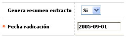

Novedad consolidado extracto
Este formulario invocado desde la opción ingreso de novedades, (issuer) y que aplica únicamente para tarjetas de tipo adicional, permite definir si para el cliente adicional se va a generar o no un resumen del extracto, teniendo en cuenta que el extracto como tal se le genera a la tarjeta principal de la cual depende.

Descripción de campos
Genera resumen extracto |
Campo tipo combo, en el que se puede seleccionar Si o No se va a generar un extracto con la información de las transacciones efectuadas durante el mes con la tarjeta adicional, para al cliente titular de la misma. |
Fecha de radicación |
Campo obligatorio en el que se registra en formato YYYY-MM-DD la fecha en la cual el cliente solicitó la generación del resumen del extracto y que puede ser una fecha anterior a la actual del sistema, facilitando el ingreso de novedades de fechas anteriores. |